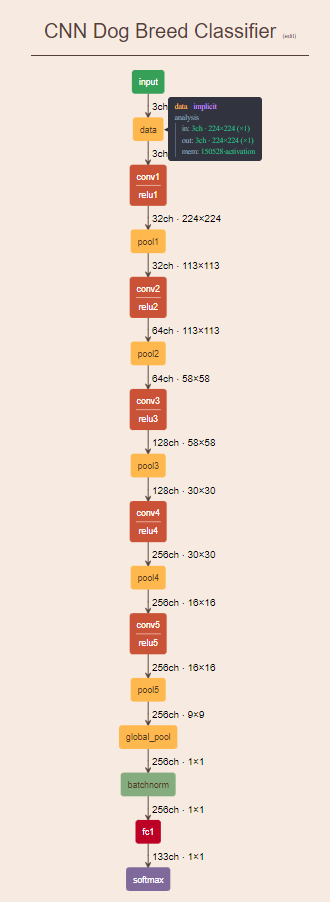
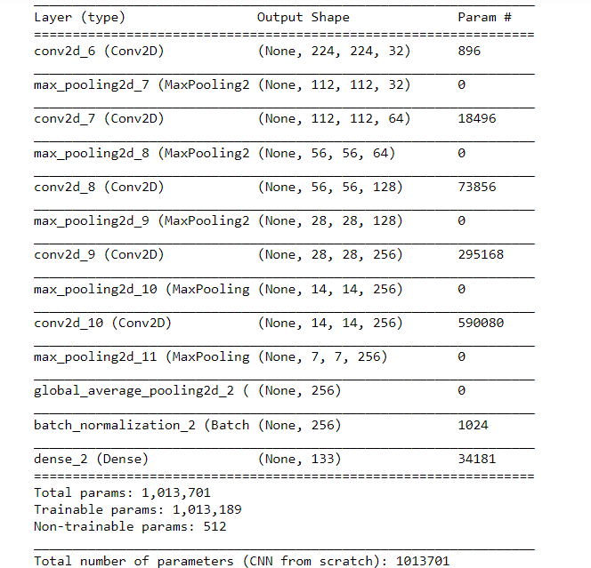
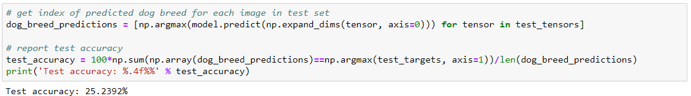
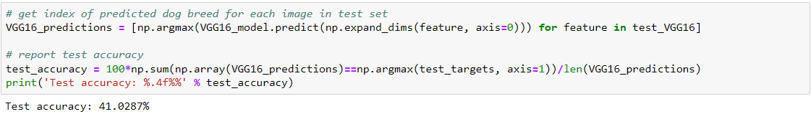
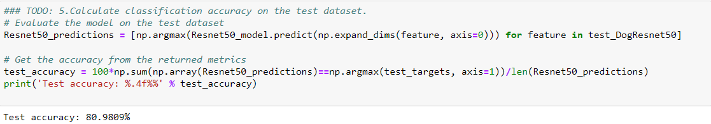
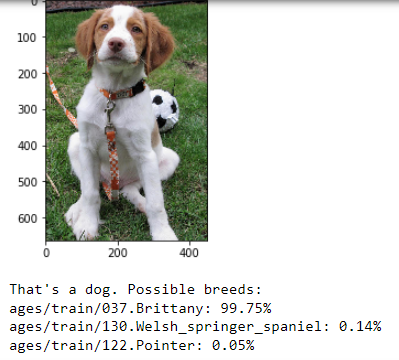

18/07/2023 • Mehmet Emre Toktay Dog Breed Classification Using Convolutional Neural Networks Dogs have been our loyal companions for thousands of years, providing love, companionship, and protection. They come in various shapes, sizes, and temperaments, each breed with its own unique characteristics. There always been growing interest in understanding the various dog breeds, as this knowledge helps in identifying breed-specific health issues and guides us in building strong connections with these lovable creatures. Displaying Images Side by Side In this project, we have developed a dog breed classifier using Convolutional Neural Networks (CNN) that can accurately identify a dog's breed from its image. This classifier can be useful for potential pet owners looking to learn more about the breed of a dog they wish to adopt or for those who simply want to understand the breed-specific characteristics of their furry friends. Overview The dog breed classifier project aims to accurately identify dog breeds from images using Convolutional Neural Networks (CNNs). The classifier is capable of predicting the breed of a dog with high accuracy and can also differentiate between human and dog images. If a human image is provided, the model suggests the most resembling dog breed.Also show three possibles. Some examples: Displaying Images Side by Side The project involves several steps, including: 1. Data loading and preprocessing : The code first loads the dog dataset and splits it into training, validation, and test sets using the load_dataset function. It also loads and shuffles human images for use in the human face detection task. 2. Human face detection: The code uses OpenCV's Haar cascade classifier for frontal face detection. The face_detector function takes an image path as input and returns True if it detects a face in the image, and False otherwise. It then calculates the percentage of human faces detected in human and dog images. 3. Dog detection using ResNet50: The code uses the pre-trained ResNet50 model to detect dogs in the images. The dog_detector function takes an image path as input and returns True if the model predicts the image to be a dog, and False otherwise. It then calculates the percentage of dogs detected in human and dog images. 4. Convolutional Neural Networks model :The code defines a CNN model , compiles it, and trains it using the training set. The model is then evaluated on the test set to obtain the test accuracy. 5. Transfer learning with VGG16: The code loads the bottleneck features obtained from the VGG16 model and creates a new model by adding a global average pooling layer followed by a dense layer with 133 output nodes (corresponding to the dog breeds). The model is compiled, trained, and evaluated on the test set to obtain the test accuracy. 6. Transfer learning with ResNet50 : The code loads the bottleneck features obtained from the ResNet50 model and creates a new model by adding a global average pooling layer followed by a dense layer with 133 output nodes (corresponding to the dog breeds). The model is compiled, trained, and evaluated on the test set to obtain the test accuracy. 7. Dog breed prediction : The code defines a dog_breed function that takes an image path as input and returns the top three predicted dog breeds along with their probabilities. The dog_breed_detector function displays the input image and provides dog breed predictions for both human and dog images. The code demonstrates the process of building a dog breed classifier using deep learning techniques, including face detection, transfer learning with pre-trained models (ResNet50 and VGG16), and creating a CNN. The final part of the code predicts the dog breed for a given image, whether it contains a dog or a human face. Strategy for solving the problem In this project, our goal is to build a model that can accurately classify dog breeds based on images. To tackle this problem, we employ three different strategies: creating a CNN, using transfer learning with VGG16, and using transfer learning with ResNet50. 1. Convolutional Neural Network (CNN) : In this approach, we design a custom CNN architecture tailored to our specific problem. We create convolutional and pooling layers to extract features from the images, followed by fully connected layers to make predictions. Although this approach allows for more control over the architecture, it requires a significant amount of data and computational resources to achieve satisfactory results, as the model needs to learn everything . 2. Transfer Learning with VGG16: Instead of building a CNN , we can leverage pre-trained models like VGG16 that have already learned general features from a large dataset (e.g., ImageNet). We replace the original fully connected layers with new ones, specifically designed for our dog breed classification task. By freezing the weights of the convolutional layers, we can fine-tune the model using less computational resources and time compared to training the whole network. The VGG16 model is known for its simplicity and strong performance on image classification tasks. 3. Transfer Learning with ResNet50: Similar to the VGG16 approach, we use another pre-trained model, ResNet50, for transfer learning. ResNet50 is a more complex and deeper architecture, which leverages residual connections to facilitate the training of deeper networks. It is known for its excellent performance on a wide range of image classification tasks. We follow the same process as with VGG16, replacing the original fully connected layers and training only the new layers for our dog breed classification problem. By comparing the performance, training time, and the number of parameters for each strategy, we can choose the most suitable approach for our problem. Transfer learning techniques, like VGG16 and ResNet50, often lead to better results and require less training time than building a CNN. However, it's essential to consider the trade-offs between computational resources, training time, and model complexity when selecting the best strategy for solving the problem. Metrics With Justification In this project, we use accuracy as the primary metric to evaluate and compare the performance of our models. Accuracy is defined as the proportion of correctly classified images out of the total number of images in the dataset. It is a simple and intuitive metric that is widely used in classification problems. The formula for accuracy is: Accuracy = (Number of correct predictions) / (Total number of predictions) Justification for using accuracy as the metric: 1. Balanced Dataset : In our dataset, we have 133 different dog breeds, and the images are relatively evenly distributed among these breeds. This balance allows us to use accuracy as a reliable metric, as it is less likely to be biased towards a particular class. 2. Easy Interpretability: Accuracy is a straightforward metric to understand and interpret, making it easy to communicate the performance of the model to non-technical stakeholders.. 3. Comparability: As accuracy is a commonly used metric in classification tasks, it allows us to compare the performance of our model with other models or benchmarks in the domain. 4. Suitable for Multiclass Problems: Accuracy is a suitable metric for multiclass classification problems like dog breed classification, as it provides a single value that summarizes the overall performance of the model across all classes. By comparing the performance, training time, and the number of parameters for each strategy, we can choose the most suitable approach for our problem. Transfer learning techniques, like VGG16 and ResNet50, often lead to better results and require less training time than building a CNN. However, it's essential to consider the trade-offs between computational resources, training time, and model complexity when selecting the best strategy for solving the problem. It is important to note that accuracy may not always be the best metric for every classification problem. For imbalanced datasets, other metrics like precision, recall, F1-score, or the area under the receiver operating characteristic (ROC) curve might be more appropriate. However, given the nature of our problem and the balanced dataset, accuracy serves as a suitable metric for evaluating the performance of our dog breed classification models. Import Datasets We start by importing the necessary libraries and datasets. The algorithm uses two datasets: Show/Hide Dog Data Set/Results Show/Hide Human Data Set/Results Human face images: This dataset contains 13,233 human face images and is used to detect human faces in the input images. The face detection is performed using OpenCV's cv2.CascadeClassifier class and the detectMultiScale method. Human Samples Show/Hide Human Face Images Code/Results Dog images: This dataset comprises 8,351 dog images categorized into 133 dog breeds. The images are divided into training (6,680 images), validation (835 images), and test (836 images) sets. The dog detection is performed using a pre-trained ResNet-50 model from the torchvision library. Dog Samples Show/Hide Dog Face Images Code/Results The input data is loaded and preprocessed using various Python libraries such as sklearn, Keras, NumPy, and OpenCV. The code snippets provided demonstrate the process of loading the datasets, shuffling the human face images, detecting faces in the images, and calculating the percentage of detected faces in both sets. For detailed explanation about Loading and preprocessing the data please check this. Detect Humans The first step in the algorithm is to check if the input image contains a human face. To do this, we use the cv2.CascadeClassifier class and the detectMultiScale method to detect human faces in the image. If a human face is detected, we continue to the next step. Otherwise, we return an error message. Cascade structure for Haar classifiers Detect Dogs The second step in the algorithm is to check if the input image contains a dog. To do this, we use a pre-trained ResNet-50 model from the torchvision library. The model is trained on the ImageNet dataset, which includes a large number of dog images. We use the pre-trained model to predict the most likely dog breed for the input image. If a dog is detected, we continue to the next step. Otherwise, we return an error message. ResNet50 Model Architecture Create a Convolutional Neural Networks to Classify Dog Breeds The third step in the algorithm is to create a Convolutional Neural Network (CNN) to classify dog breeds. We use the Keras library in Python to create the model. The model consists of several convolutional layers followed by max pooling layers and fully connected layers. For display i used GitHub Gist and David Gschwend Netscope CNN Analyzer. Please check this link: Detailed Convolutional Neural Networks Diagram (CNN) and architecture is as follows:  Detailed Convolutional Neural Networks Diagram (CNN) 1. Convolutional layer with 32 filters of size 3x3, using a stride of 1, same padding, and ReLU activation. 2. Max pooling layer with a 2x2 window and stride of 2. 3. Convolutional layer with 64 filters of size 3x3, using a stride of 1, same padding, and ReLU activation. 4. Max pooling layer with a 2x2 window and stride of 2. 5. Convolutional layer with 128 filters of size 3x3, using a stride of 1, same padding, and ReLU activation. 6. Max pooling layer with a 2x2 window and stride of 2. 7. Convolutional layer with 256 filters of size 3x3, using a stride of 1, same padding, and ReLU activation. 8. Max pooling layer with a 2x2 window and stride of 2. 9. Convolutional layer with 256 filters of size 3x3, using a stride of 1, same padding, and ReLU activation. 10. Max pooling layer with a 2x2 window and stride of 2. 11. Global average pooling layer to reduce the spatial dimensions. 12. Batch normalization layer to normalize the features. 13. Fully connected layer with 133 units (number of dog breeds) and softmax activation. Show/Hide CNN Code  Show/Hide CNN Results After defining the model architecture, we train the model on the dog breed dataset. To evaluate the model, we calculate the test accuracy using the following code: First Test Results:  In the subsequent sections of the article, we will delve into the improvements made to the model, providing a thorough explanation of the rationale behind each modification and discussing the resulting impact on the model's performance. Keep in mind that the initial test accuracy was 25.2392%. By implementing these enhancements, we aim to achieve a higher accuracy, thus making the model more effective at classifying dog breeds. Use a Convolutional Neural Networks to Classify Dog Breeds (using Transfer Learning) The fourth step in the algorithm is to use transfer learning with a pre-trained CNN to classify dog breeds. We employ the VGG-16 model from the torchvision library, which is pre-trained on the ImageNet dataset. We extract the bottleneck features from the VGG-16 model and replace the last fully connected layer with a new one that outputs 133 classes, one for each dog breed. By fine-tuning the model on the dog breed dataset, we aim to achieve better performance. The test accuracy obtained after implementing transfer learning with the VGG-16 model is 41.0278%. To further enhance the model, we will explore the use of other pre-trained models and their bottleneck features, as well as discuss the model architecture in more detail. VGG16 Second Test Results:  Create a CNN to Classify Dog Breeds with Transfer Learning In the fifth step of the algorithm, we implement a CNN to classify dog breeds using transfer learning. We utilize the VGG-16 model, similar to what we did in step 4. However, this time we freeze all the convolutional layers and only train the last fully connected layer. By doing this, we can train the model more efficiently and with fewer computational resources. After training the model, we evaluate the test accuracy using the following code: Third Test Results:  The test accuracy achieved with the ResNet-50 model is 80.9809%. Comparison Table This comparison table presents the performance of three different models: a custom CNN built, and two transfer learning models using VGG16 and ResNet50. The table highlights the number of parameters, epoch count, training time, and accuracy for each model. It is evident that the transfer learning models, particularly ResNet50, achieve significantly higher accuracy compared to the custom CNN, while requiring fewer parameters and less training time. This demonstrates the effectiveness of transfer learning in achieving better results with a more efficient use of computational resources. Model Number of Parameters Epoch Count Training Time(s) Accuracy Convolutional Neural Networks 1013701 15 974.45 25.2392% Transfer Learning (VGG16) 68229 20 33.66 41.0287% Transfer Learning (ResNet50) 272517 20 30.46 80.9809% In the case of the custom CNN built from scratch at this project, increasing the number of epochs to 20 resulted in overfitting (Accuracy rate was around %14). Overfitting occurs when a model learns the training data too well, capturing noise and patterns that are not relevant to the problem at hand. This leads to poor generalization and lower accuracy on unseen data. On the other hand, underfitting happens when a model fails to capture the underlying patterns of the data, resulting in suboptimal performance on both the training and test datasets. ML | Underfitting and Overfitting Balancing the model's complexity and training process is crucial to avoid overfitting and underfitting. Techniques such as early stopping, regularization, and dropout can be employed to mitigate overfitting, while increasing model capacity and using more training data can help address underfitting. In our comparison, the transfer learning models, especially ResNet50, demonstrated a well-balanced performance, achieving high accuracy without overfitting, showcasing the benefits of leveraging pre-trained networks in improving generalization capabilities. Write your Algorithm The sixth step in the algorithm is to write the main algorithm that combines all the previous steps. The algorithm takes an input image, first checks if it contains a human face, then checks if it contains a dog, and finally classifies the dog breed using the best performing CNN model from steps 3 to 5. Test Your Algorithm The last step in the algorithm is to test the accuracy of the classifier on a set of test images.  Improvements As for possible improvements, there are a few areas of the project that could be further developed. For instance, fine-tuning and data augmentation could be explored to potentially improve the accuracy of the model. Additionally, while the project is focused on predicting dog breeds, it could be beneficial to expand the scope to include mixed breed dogs as well. Mixed breed dogs can be more difficult to identify, but it could be helpful for owners and dogs to know their breed composition. Furthermore, the model's ability to identify humans that "look like dogs" could also be improved. There appears to be a problem with the Silky Terrier data, as this breed is often erroneously identified in human photos. Removing the Silky Terrier from the model's predictions seems to result in more accurate human identification. These are areas that could be explored in future iterations of the project.